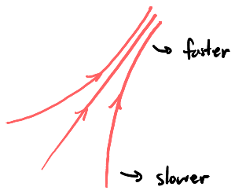
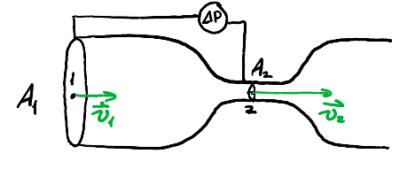
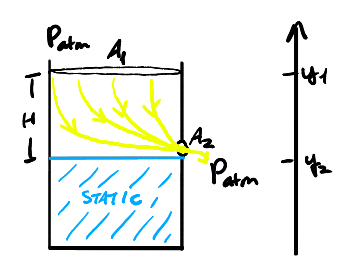

Fluids
Table of Contents
1. Fluids
Fluids have much weaker intermolecular interactions than solids and cover both liquids and gases. These weaker interactions mean that unlike solids, liquids and gases cannot maintain any specific shape.
The main differences between liquids and gases are that a gas can escape from a container (without a lid on), and that gases are highly compressible while liquids will be considered here to be incompressible.
Instead of using mass and forces as property descriptors, we will instead use density (mass per unit volume, \(\rho\)) and pressure (force per area, \(P\), measured in pascals):
\begin{align} \boxed{\rho = \frac{m}{V}} \\ \boxed{P = \frac{F_{\perp}}{A}} \end{align}Note that for pressure, since we only consider the perpendicular component of force, it is a scalar value.
1.1. Static Fluids
We have a container holding a homogenous fluid. Consider a slice of fluid with depth \(\text{d}h\), which experiences forces \(\vec{F}\) on the top and \(\vec{F} + \text{d}\vec{F}\) on the bottom:

By Newton's second law in static equilibrium, we have:
\begin{align} \text{d}F_g + F - (F+\text{d}F) &= 0 \notag \\ \text{d}mg + AP - A(P+\text{d}P) &= 0 \notag \\ \rho A\text{d}hg + AP - AP - A\text{d}P &= 0 \notag \\ \text{d}P = \rho g\text{d}h \notag \end{align}Assuming density is constant (i.e. liquids), then this differential equation becomes the following pressure function in terms of height:
\begin{align} \boxed{P(h) = P_0 + \rho gh} \end{align}where \(P_0\) is the pressure at the surface when \(h=0\). This is a measure of absolute pressure.
Oftentimes, we only want to measure the gauge pressure, which does not consider atmospheric pressure:
\begin{align} \boxed{P_G = P_\text{abs} - P_\text{atm}} \end{align}Example: U-shaped tube
Consider a u-shaped tube with water and oil shown below. We want to find \(H\), the difference in height between the water levels:

To do this, we can express \(P_D\), the pressure at point D, using equations from both sides of the tube:
\begin{align} P_D &= P_A + \rho_0 gh_0 + \rho_w gh_{BD} \notag \\ P_D &= P_C + \rho_w gh_{CD} \notag \end{align}Setting them equal to each other, we have:
\begin{align} P_A + \rho_0 gh_0 + \rho_w gh_{BD} = P_C + \rho_w gh_{CD} \notag \end{align}But since \(P_A = P_C = P_{\text{atm}}\), this simplifies to:
\begin{align} \rho_0 gh_0 + \rho_w gh_{BD} &= \rho_w gh_{CD} \notag \\ \rho_o h_0 &= \rho_w(h_{CD} - h_{BD}) \notag \end{align}Thus, since \(h_{CD} - h_{BD} = H\), we have:
\begin{align} \boxed{H = \frac{\rho_0 h_0}{\rho_w}} \notag \end{align}1.1.1. Pascal's Principle
For the above example, we could've skipped directly to noting that \(\rho_0 h_0 = \rho_w H\) by considering the point \(B\) on the other side of the tube, at the same height, called \(B'\). Then, the pressures at \(B\) and \(B'\) are the same, since if you are in the same fluid, (1) shows that the pressure is dependent only on the height. For static fluids, the principle that the same fluid must have the same pressure at points with the same height is known as Pascal's principle.
This principle is used in applications such as hydraulic jacks, where a small amount of force applied on a small area of fluid gets multiplied to be a large amount of force over a large area:

This is because to maintain the same pressure on the other side (at the same height, due to Pascal's principle), as area increases, the force must also increase.
1.1.2. Buoyancy
Buoyancy occurs when a solid is submerged (partially or entirely) in a fluid, due to the pressure difference between the top and bottom of a submerged solid. This causes an upward-pointing buoyant force, denoted \(F_B\).
The magnitude of this buoyant force can be experimentally shown as equivalent to the weight of the fluid being displaced by the solid. This result is known as Archimedes' principle.
Example: Partially submerged iceberg
Consider a partially submerged iceberg like so:

We want to know the fraction of the iceberg's volume that is submerged. Using Newton's 2nd law in static equilibrium:
\begin{align} F_B &= F_g \notag \\ \rho_wV_\text{sub}g &= \rho_\text{ice}V_\text{tot}g \notag \end{align}Thus, the ratio is:
\begin{align} \boxed{\frac{V_\text{sub}}{V_\text{tot}} = \frac{\rho_{\text{ice}}}{\rho_w}} \end{align}Example: Submerged cylinder in two fluids
Consider a cylinder in static equilibrium across two immiscible fluids:

We want to find \(\rho_s\), the density of the solid. We calculate the net buoyant force by considering two portions of the cylinder, each one within a single fluid:
\begin{align} F_{B_{\text{tot}}} &= F_{B_{1}} + F_{B_{2}} \notag \\ &= \rho_1A\frac{H}{3}g + \rho_2A\frac{2H}{3}g \notag \end{align}Then, by static equilibrium:
\begin{align} F_{B_{\text{to}}} &= F_g \notag \\ AHg\left(\frac{\rho_1}{3}+\frac{2\rho_2}{3}\right) &= \rho_s AHg \notag \end{align}Isolating \(\rho_s\), we get:
\begin{align} \boxed{\rho_s = \frac{\rho_1 + 2\rho_2}{3}} \end{align}1.2. Fluid Dynamics
For fluid dynamics, we mainly study fluids with laminar flow (no turbulence), that are steady state (not time dependent), and are ideal fluids (no viscosity). Instead of using velocity for individual fluid molecules, we will instead use streamlines, which are continuous lines oriented along the velocity vector, to represent the flow of fluid. The magnitude of the velocity is represented by the density of streamlines per unit area:

1.2.1. Continuity
THe flow of mass is conserved along a flowtube, which means that we can say \(\frac{\Delta m}{\Delta t}\) is constant at every point. Then, if we know the density and area of a particular section of the flowtube, and how much distance \(\Delta l\) it covers over a time change of \(\Delta t\), then we can set up the following relationship:
\begin{align} \frac{\Delta m_1}{\Delta t} = \frac{\rho_1 A_1 \Delta l_1}{\Delta t} = \rho_1 A_1 v_1 \notag \end{align}In other words, we see that \(\rho Av\) is conserved along a flowtube. For incompressible fluids (i.e. liquids), then \(\rho\) is constant, so \(\boxed{Av}\) is constant for liquids along a flowtube. If we take any two points, then we can set up an equality known as the continuity equation:
\begin{align} \boxed{A_1v_1 = A_2v_2} \end{align}Thus, it can be seen that as cross-sectional area decreases in a tube, for a non-compressible fluid its velocity must increase.
1.2.2. Bernoulli's Equation
From energy conservation, it can be shown that:
\begin{align} \boxed{P + \rho gy + \frac{1}{2}\rho v^2 = \text{constant}} \end{align}This equation is known as Bernoulli's equation, where \(y\) is elevation. The terms \(\rho g y\) and \(\frac{1}{2} \rho v^2\) look a lot like their gravitational potential energy and kinetic energy counterparts. This is because these terms result from dividing those energies by the volume, making them energy densities: energy per unit volume. Similarly, \(P\), pressure, represents internal energy per unit volume (since by the ideal gas law, \(PV\) is internal energy). Viewing it like this, Bernoulli's equation can be intuitively understood as a equation describing a conservation of energy density.
Example: Venturi tube
Consider the Venturi tube setup shown below:

We want to show that \(P_2\), the pressure at point 2, is less than \(P_1\), the pressure at point 1.
Assume that the manometer is reading the pressure difference between point 1 and point 2. From continuity, we know that \(v_2 = \frac{A_1v_1}{A_2}\). Then, using Bernoulli's equation, we have:
\begin{align} P_1 + \rho gy + \frac{1}{2}\rho v_1^2 &= P_2 + \rho gy + \frac{1}{2}\rho v_2^2 \notag \\ P_1 - P_2 = \frac{1}{2}\rho(v_2^2 - v_1^2) \notag \\ \Delta P = \frac{1}{2}\left(\frac{A_1^2}{A_2^2} - 1\right)v_1^2 \notag \end{align}Since \(\frac{A_1^2}{A_2^2} - 1 > 0\), then \(P_1 > P_2\), so \(P_2\) is less than \(P_1\).
Example: Container with hole
Consider a container with a hole in it. We want to determine the velocities of the fluid at the top of the container (point 1) and at the hole (point 2):

We can use a combination of continuity and Bernoulli's equation to determine \(v_1\) and \(v_2\):
\begin{align} P_\text{atm} + \rho gy_1 + \frac{1}{2}\rho v_1^2 &= P_\text{atm} + \rho gy_2 + \frac{1}{2}\rho v_2^2 \notag \\ \rho g(y_1 - y_2) &= \frac{1}{2}\rho(v_2^2 - v_1^2) \notag \\ g(y_1-y_2) &= \frac{1}{2}(v_2^2 - v_1^2) \notag \end{align}Since \(v_2 = \frac{A_1v_1}{A_2}\),
\begin{align} gH &= \frac{1}{2}\left(\frac{A_1^2v_1^2}{A_2^2}-v_1^2\right) \notag \\ gH &= \frac{1}{2}\left(\frac{A_1^2}{A_2^2}-1\right)v_1^2 \notag \\ v_1^2 &= \frac{2gH}{A_1^2-A_2^2}A_2^2 \notag \end{align}Therefore, \(v_1\) is:
\begin{align} \boxed{v_1 = A_2\sqrt{\frac{2gH}{A_1^2-A_2^2}}} \notag \end{align}Plugging this back into the continuity equation, we determine \(v_2\) to be:
\begin{align} \boxed{v_2 = A_1\sqrt{\frac{2gH}{A_1^2-A_2^2}}} \notag \end{align}